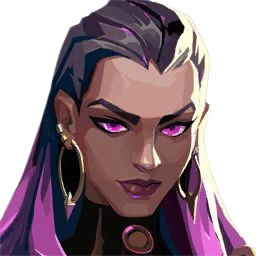

Clove
ume encrenqueire da Escócia,
vai desorientar os inimigos tanto no calor do combate quanto no frio da morte.
Jovem e imortal, elu mantém os inimigos confusos até do além-túmulo:
momentos após a morte, elu retorna à vida.
Clove é conhecida tambem por suas multiplas funções dentro do campo de batalha.
Clove é da classe "Controlador" porem alguns jogadores gostam de usa-la como "Duelista" (Classe
de Ataque)
pois ela possui 2 smokes, 1 cura e uma "Granada fragilizante" (deixa os inimigos com menos
vida).

Reyna
Criada no coração do México, Reyna domina o combate individual,
destacando-se a cada abate efetuado.
Sua capacidade só é limitada por sua própria perícia,
tornando-a bastante dependente de desempenho.
Reyna... Disputada pelos players por ser uma agente SUPERAGRESSIVA nas mãos certas,
Reyna possui 4 habilidades. Olhar Voraz (2 orbes), Devorar (2 orbes compartilhadas)
Dispensar (Orbes compartilhadas com devorar) e Imperatriz (1 uso com tempo limitado)
precisando de 6 pontos ult para usa-la.

Novo Mapa "Sunset"
Sunset, o novo mapa de VALORANT inspirado em Los Angeles.
O Sunset tem uma rota do meio bastante difícil de controlar e, na prática,
não favorece nenhuma das equipes. É uma rota boa para alcance de rifles
e oferece diversas oportunidades para a equipe que conseguir dominá-la.